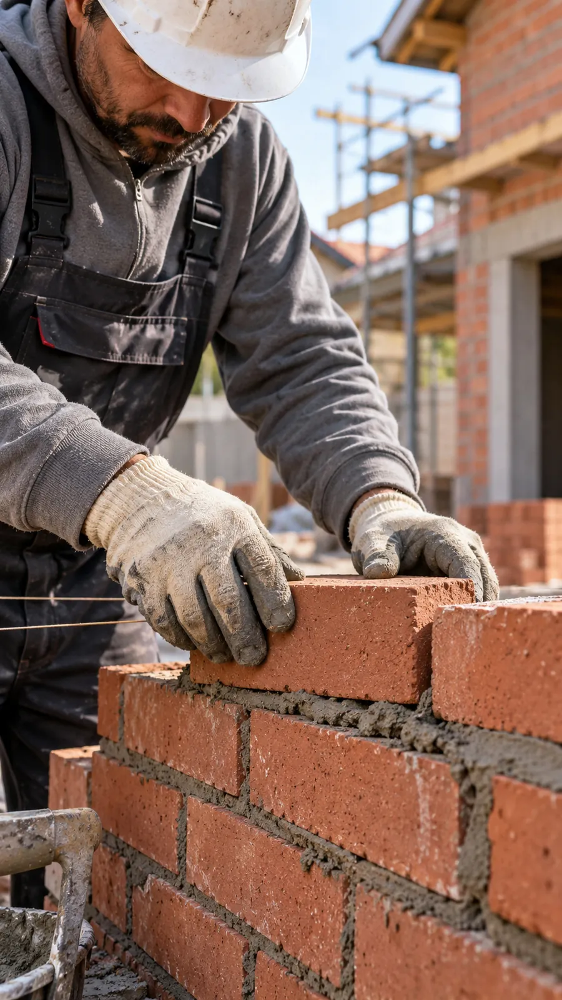
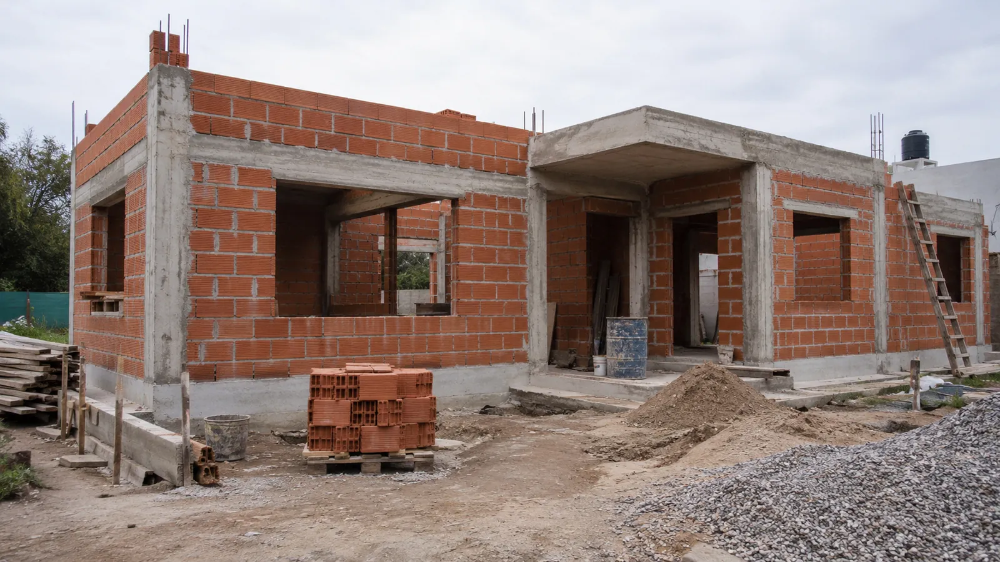
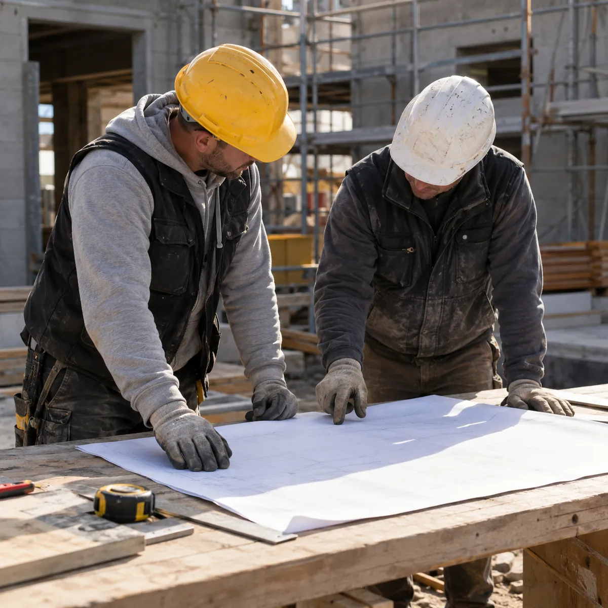
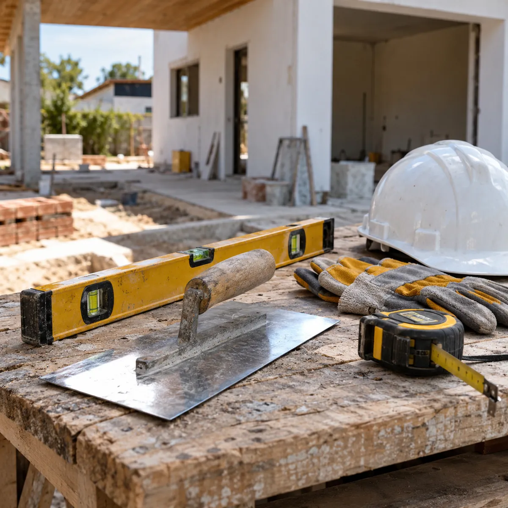
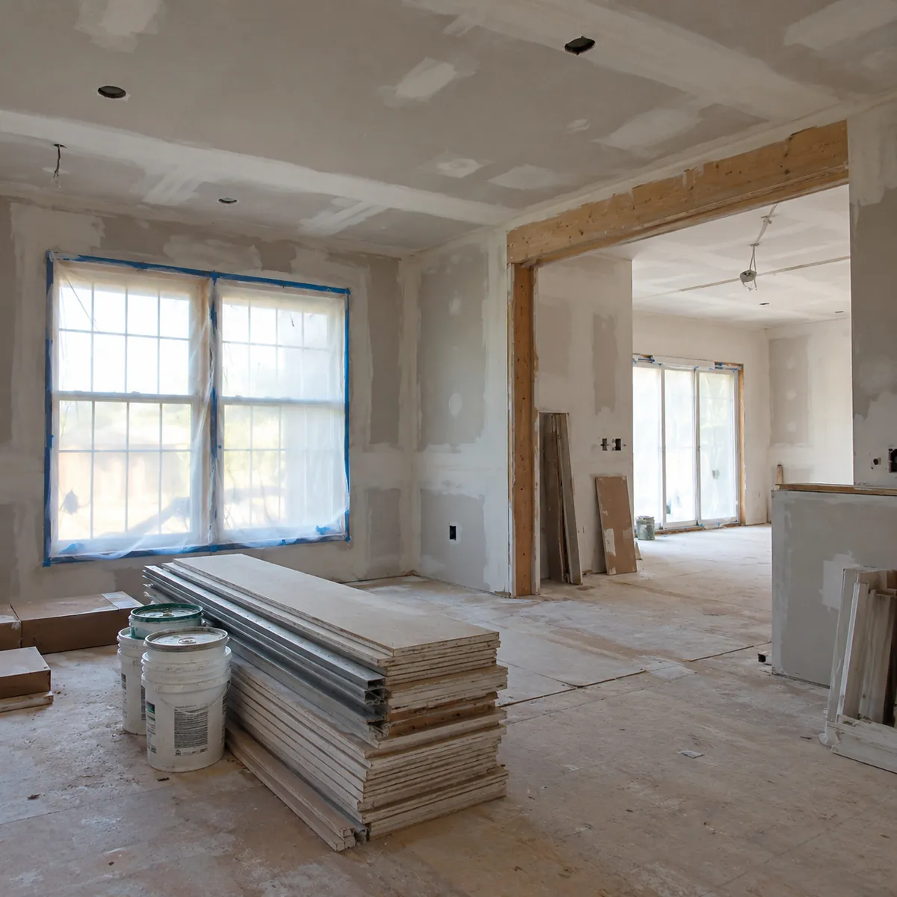

Contratista de construcción · CABA y GBA
Obras nuevas y refacciones, con un solo contacto
Construimos tu casa o la refaccionamos con un equipo armado para cada oficio. Vos hablás con una sola persona, desde la primera visita hasta la entrega.



Cómo podemos ayudarte
Un equipo para tu proyecto. Una persona para coordinarlo.

Construcciones nuevas
Te acompañamos en todas las etapas: bases, estructura, paredes, techo, instalaciones y terminaciones.
- Bases y estructura de hormigón
- Paredes de ladrillo o bloque
- Techo, membrana y aislación
- Instalaciones y terminaciones

Refacciones de casas
Baños, cocinas, pisos, ampliaciones o la casa entera, sin buscar un gremio distinto para cada cosa.
- Baños y cocinas completos
- Pisos y revestimientos
- Ampliaciones y ambientes nuevos
- Durlock, revoques y pintura
Coordinación de trabajos
Una sola persona organiza a todos los oficios, ordena los tiempos y te cuenta cómo avanza la obra.
- Un solo responsable de punta a punta
- Cada oficio entra cuando le toca
- Avances contados por WhatsApp
- Un presupuesto ordenado por etapas
1contacto para toda la obra
Un equipo armado para cada oficio
«Con una sola persona tenés la solución para refaccionar tu casa o construir de nuevo.»
-
02HormigónBases, columnas, losas y contrapisos. -
03AlbañileríaParedes, carpetas y arreglos de mampostería. -
07Revoques y DurlockRevoques, cielorrasos y tabiques de placa. -
08Pisos y revestimientosPorcelanato, cerámica y revestimientos de baño y cocina. -
09AberturasColocación de puertas y ventanas. -
10PinturaInterior, exterior y terminaciones finales. -
Y también
Demolición y retiro, techos, instalación sanitaria y electricidad.
Ver qué oficios lleva tu obra
Imágenes ilustrativas
Un solo contacto para toda la obra
Coordinando por tu cuenta
- Buscás y comparás un gremio distinto para cada trabajo.
- Coordinás vos quién entra primero y quién después.
- Juntás presupuestos sueltos que no cierran entre sí.
- Si algo falla, cada gremio mira para otro lado.
Con Construcción Almada
- Hablás con una sola persona para toda la obra.
- Cada oficio entra cuando le toca, en el orden correcto.
- Recibís un presupuesto ordenado por etapas.
- Un solo responsable da la cara por el trabajo.
Cómo trabajamos
De la primera charla a la entrega, siempre con la misma persona.
- 1
Nos contás qué querés hacer
Por WhatsApp, con fotos o un plano si lo tenés.
- 2
Visitamos la obra
Medimos, vemos el estado y escuchamos lo que necesitás.
- 3
Te pasamos el presupuesto
Ordenado por etapas, con el trabajo de cada oficio.
- 4
Coordinamos y construimos
La misma persona organiza los gremios y te cuenta cada avance.
¿Qué oficios lleva tu obra?
Marcá lo que querés hacer y mirá quiénes entran, en orden. Todos con un solo contacto.
El mensaje se arma solo y lo revisás en WhatsApp antes de mandarlo.
7 oficios 1 contacto
- Demolición y retiroSacamos lo viejo y dejamos el lugar listo para empezar.
- AlbañileríaParedes, carpetas y arreglos de mampostería.
- Instalación sanitariaAgua fría y caliente, desagües y conexiones.
- ElectricidadCableado, bocas, tablero y artefactos.
- Revoques y DurlockRevoques, cielorrasos y tabiques de placa.
- Pisos y revestimientosPorcelanato, cerámica y revestimientos de baño y cocina.
- PinturaInterior, exterior y terminaciones finales.
Así llega tu mensaje
Hola Construcción Almada, quiero pedir un presupuesto. Quiero hacer: baño. Oficios que entrarían: Demolición y retiro, Albañilería, Instalación sanitaria, Electricidad, Revoques y Durlock, Pisos y revestimientos, Pintura. Para cuándo: lo antes posible. ¿Cuándo podrían venir a ver la obra?
Contanos qué necesitás
Consultá por tu obra o refacción. Te responde la misma persona que la va a coordinar.
Dudas antes de empezar
¿Hacen trabajos chicos o solo obras grandes?
Las dos cosas: desde arreglar un baño hasta construir una casa entera. Contanos qué necesitás y te decimos cómo lo encaramos.
¿Con quién hablo durante la obra?
Siempre con la misma persona, que coordina a todo el equipo y te cuenta cómo va cada etapa.
¿Cómo se arma el presupuesto?
Primero vemos la obra. Después te pasamos un presupuesto ordenado por etapas, con lo que hace cada oficio.
¿En qué zonas trabajan?
En Capital y Gran Buenos Aires. Si tu obra queda más lejos, escribinos igual y lo vemos.
1contacto para toda la obra